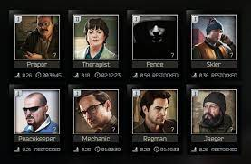

This is your stash, when you first start the game its level 1. The more you play though you can level it up in you hide out. When you buy the full game your stash gets to level 4 which is the max level. Your stash holds all the items you find in raid, so it might be a good idea to upgrade it or you will run out of space. There are items you can buy that will help you save space in your stash. There are many one people have the most is the scav box. The scav box hold items that are considered junk but some of those items are used a lot. There are also medical boxes that hold all you health items. The next big one is the food box. The stash has a sorting table you help you fit items in your stash. One thing I like is that you can put backpacks inside other backpacks
The traders are very important because they give you the task to progress. The traderds get unlocked one by one the more you level up. The traders also start at level 1 ,so you need to buy things from them and do their task to level them up.